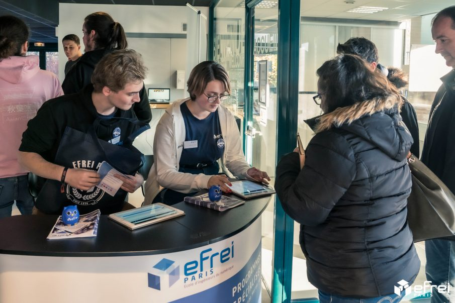

Bienvenue sur la page Cours et Examens ! Ici vous trouverez plusieurs
informations sur vos cours et examens à EFREI PARIS N'hésitez pas a scroller ;)
Les cours en Amphi
1e étape : Se placer
En avance tu arriveras, en effet en amphi les places ou tu suivras le mieux sont du 1er au 3ème rang, après plus tu recules et plus Netflix ou Brawl Star t'attirent.
2e étape : Prendre le cours
En Amphi, il y a deux types de prise différentes, soit le prof distribu des poly a trou qu'il faut remplir au fur et a mesure de l'avancée de celui-ci, sinon tout le cours est écrit au tableau et doit être pris a la main (d'ou l'importance d'être bien placé pour bien voir).
Il y a souvent des powerpoints de projetés qui eut sont régulièrement donnés sur Moodle, mais la compréhension de ceux-ci nécessitent le cours.
3e étape : Être présent
Certe les cours en amphi c'est pas le plus passionnant surtout a 8h, il y a presque jamais d'appel ou au pire une feuille qu'un ami peut signer, mais c'est la base de la matière, sans cette base, les TDs vont être beaucoup plus compliqués.
Donc certe plus l'année avance et moins de monde est présent mais pense a tes vacances sans rattrapages.
Bonus : Installez un VPN
En bon éléve que vous êtes, vous allez surement remarquer le le Wi-Fi de l'EFREI bloque toute connexion a des jeux en ligne.
Hors grâce a certains VPN qui donc redirige vos requètes sur un serveur de redirection au lieu du jeu, l'amusement devient possible en amphi. A vous les parties en lan et autre.
Les examens
1e étape : Les contrôles écrits
Les CE sont les premiers examens que nous passons dans un semestre. Nous avons un CE par matière d'une durée de
45 minutes. Il s'agit d'un test sur nos connaissances et plus rarement sur la pratique.
Il peut être sous la forme de QCM ou de simple questions à réponses libres.
2e étape : Les tests de TD
Ces tests sont au choix de votre enseignant de TD, il peut prendre n'importe quelle forme :qcm, reponses libres, oral.
La participation pendant les TD joue aussi sur la note finale de TD.
3e étape : Les TAI/Projets
Les TAI sont des oraux qui ont lieux uniquement dans certaines matières, plus souvent en physique.
Les TAI se travaillent en équipe et en autonomie, il n'y a pas de séances dédiés a leur execution.
C'est l'occasion de comprendre des notions vue en cours a l'aide' d'exemples concrets donc les sujets ont été choisis ou validé par le professeur.
4e étape : Les devoirs écrits
Les DE sont la finalisation de la matière pour le semestre, c'est donc l'examen le plus important du semestre, c'est donc celui avec le plus gros coefficient.
Nous avons encore une fois un DE par matière d'une durée de 1h45. Il s'agit d'un test tourné davantages vers la pratique avec peu de questions sur les connaissances. Pour cet examens. il est important de comprendre et de savoir refaire chaque tds vu pendant le semestre.
5e étape : La participation a la vie de l'école

Durant les différents trimestre une note est attribuée a chaque éléve pour sa participation a la vie de l'école. C'est une note qui correspond au nombre de point Pave que l'on a eu pendant l'année.
Un point pave correspond a 5 points dans la moyenne de participation a la vie de l'école, et si on obtient 7 points pave, la moyenne de l'UE la plus basse gagne 0.5 points.
Et pour les 9 points, l'UE obtient 1 point supplémentaire. Pour obtenir ces points, il faut participer a des journées portes ouvertes, des salons de l'étudiant ou alors être actif dans une association de l'EFREI.
Le petit plus
Efreidoc
Un site qui a servi au moins une fois a tous les étudiants : efreidoc
C'est un site qui référence des archives d'étudiants de promos antérieures. Vous y retrouverez des sujets d'examens ainsi que leur corrections.
Aussi, si vous n'avez pas pu assister à un cours, vous pourrez certainement y voir votre leçon manquée.